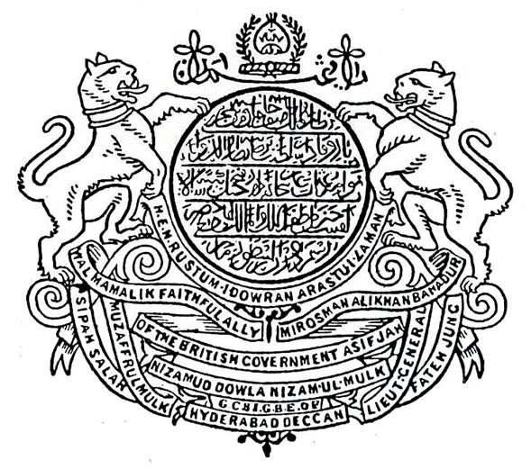

Language · Cuisine · Music · Architecture · Crafts · Sufi · Festivals
The Deccan plateau holds a culture six centuries in the making — a meeting place of Persian court and Telugu village, of Sufi shrine and Maratha plain. What survives today as Dakhni heritage is not one tradition but seven, woven together over the lifetimes of eighteen sultans and seven Nizams.
A tongue forged in the bazaar, refined at the court
When Bahmani armies marched south from Delhi in the fourteenth century, the Khari Boli of their barracks met the Telugu of the villages, the Marathi of the plains and the Kannada of the markets. Within two generations a new vernacular had taken shape — written in the Persian-Arabic script, peppered with Sanskrit and Dravidian roots, and called zaban-i-dakhni: the language of the Deccan.
By 1500 it was already a literary medium. Khwaja Bandanawaz of Gulbarga (d. 1422) used it for devotional prose; Muhammad Quli Qutb Shah left a 50,000-verse divan in it; Ibrahim Adil Shah II wrote the Kitab-i-Nauras on music and aesthetics. When Wali Deccani arrived in Delhi in 1700, his Dakhni ghazals so astonished the Mughal court that they spurred an entire new tradition — what later generations would simply call Urdu.
Modern Dakhni — heard in old Hyderabad, Aurangabad and Bidar — keeps a softness, a courteous lilt, and a fund of words (kaiku, nakko, hau, miyan) that mark it apart from the Urdu of the north. It survives in qawwali, in family kitchens and in the comedy of the street.
Persian saffron, Telugu chilli, Marathi grain, Mughal patience
Hyderabadi cuisine was born when the Persian khansamas of the Asaf Jahi court met the Telugu cooks of the deccan plateau. The result was a kitchen that took the long, slow techniques of Mughal high cuisine and married them to the heat of South Indian masalas — a marriage you can still taste in any neighbourhood biryani house.
The signature dish is kachchi dum biryani: meat marinated raw in yoghurt, ginger, fried onions and spice, layered with rice that has been parboiled separately, sealed under a dough lid and cooked over slow embers until the steam alone has done the work. Nothing about it is hurried. Done well, the meat is melting, the rice is dry-grained, and every spoonful carries saffron at one bite and chilli at the next.
Around the biryani sits a wider table: haleem in the month of Ramazan, marag for early-morning weddings, mirchi ka salan and bagara khana for any ordinary lunch, lukhmi for the high days, and khubani ka meetha — stewed Saksaul apricots under a slick of cream — to send the guests home. A glass of Irani chai ties it all together.
From Ibrahim's veena to a qawwali at Khwaja Bandanawaz's shrine
Music in the Deccan was never a side ornament of court life — it was a serious philosophical pursuit. Ibrahim Adil Shah II of Bijapur (r. 1580–1627) called himself Jagat Guru, world-teacher, and devoted his major prose work, the Kitab-i-Nauras, to the study of the nine ragas. He played the veena himself; many of the songs in that book are addressed not to Allah alone but to Saraswati, the Hindu goddess of learning.
That openness shaped a long Hyderabadi tradition. The Asaf Jahi court patronised both Hindustani classical music and the qawwali sung at Sufi shrines. Singers travelled freely between durbar and dargah. The tarana, the khayal, the thumri all found southern patrons — and the southern courts in turn gave back artists like Tanras Khan, Mehboob Khan and the seven generations of the Hyderabadi gharana.
The Sufi side of the inheritance is still loudest. On any Thursday at the dargah of Khwaja Bandanawaz in Gulbarga, or at Yousufain Sharif in Hyderabad, qawwals open the evening with verses by Amir Khusrau and close with verses by Wali Deccani — the line of poetry running unbroken from the fourteenth century.
Bahmani fortresses, Qutb Shahi minarets, Adil Shahi domes
The Deccan school is a third great Indo-Islamic tradition, distinct from the Delhi Sultanate and the Mughal style. Its early monuments are Bahmani — the great Jami mosque at Gulbarga (1367), the painted tile-work of Bidar, the soaring Mahmud Gawan madrasa with its chequered turquoise faïence. They speak of an outward-looking court that still imported masters from Iran.
The Qutb Shahis at Golconda and Hyderabad invented their own idiom: smaller, more elegant, fond of stucco arabesques and onion domes. The Charminar (1591) was both a triumphal arch over the new city and a working mosque on its upper floor. North of the city, twenty-one royal tombs stand in a single garden — every Golconda sultan and many of their queens — the largest Qutb Shahi necropolis in the world.
At Bijapur the Adil Shahis went furthest. The Gol Gumbaz, built for Muhammad Adil Shah in the 1650s, holds an unsupported dome 44 metres across; a whisper at one corner of its gallery is heard with perfect clarity at the opposite corner, seven times over. Across town the Ibrahim Rauza, the lyrical tomb of Ibrahim II, has been called the Taj of the Deccan — and it predates the Taj Mahal by twenty years.
Bidriware, Paithan silk, Hyderabadi pearls, Deccan miniatures
Bidriware — the signature craft of Bidar — has been made the same way for almost five centuries. A vessel of zinc-and-copper alloy is cast, scored with a steel point, inlaid with hammered silver and brass wire, and then dipped in a paste of soil from the Bidar fort that turns the alloy a deep matte black. The silver, untouched, gleams against it. No other metalwork looks like it; the inlay technique is on UNESCO's intangible heritage list.
South of Aurangabad, the looms of Paithan have woven the Paithani sari since the Satavahana age — pure mulberry silk with a tapestry-woven border in real zari, taking up to a year for one piece. Hyderabad's pearl trade, fed by the Persian Gulf and the Coromandel coast, made the city the world's pearl capital under the Nizams; the bazaar at Charminar still sells more pearls than any place on earth.
The painted arts had their own school. The Deccan miniature, born at Ahmadnagar and refined at Bijapur and Golconda, used taller proportions, lyrical landscapes and a palette of emerald, lapis and gold leaf — closer to Persian Safavid taste than to the Mughal manner of Delhi.
Chishti, Qadiri and Suhrawardi orders in the Deccan plateau
Long before the sultans came south, the Sufi orders did. Burhan-ud-Din Gharib, a chief disciple of Nizamuddin Aulia of Delhi, settled at Khuldabad in the early fourteenth century and brought the Chishti chain into the Deccan. His successors fanned out — Bandanawaz to Gulbarga, Shaikh Ashraf to Bidar, the Suhrawardis to Khambayat — and they became, more than the kings, the binding thread of the new society.
Their power was not military. They taught in the local tongue when the courts still wrote in Persian; they fed travellers; they mediated between Hindu and Muslim peasants. When Khwaja Bandanawaz of Gulbarga began writing in early Dakhni around 1400, he was using the saints' tongue, the language his disciples could understand. That gesture, repeated for centuries, is one of the reasons Dakhni became a literary language at all.
Today the dargahs of the Deccan still draw visitors of every faith — Khwaja Bandanawaz at Gulbarga, the Yousufain at Hyderabad, the saints' graves on the rocks at Pahari Sharif. On Thursday nights the qawwals come, the langar is served, and the courtyard fills with people who have been coming for six hundred years.
From Ramazan iftar at Charminar to Bonalu in the old city
Heritage is not only what stands in a museum; it is what people do on a Thursday evening. A Dakhni year still moves through the rhythms of the dynasties — Ramazan night markets that come alive at iftar around the Charminar; Eid-ul-Fitr biryani that stretches the morning into the afternoon; Muharram processions whose marsiya recitations preserve a Dakhni religious literature six centuries old.
Hyderabad's festivals are remarkably plural: the Hindu festival of Bonalu, when goddess Mahankali is worshipped in the old city, draws Muslim shopkeepers as readily as Hindu families; the urs at Gulbarga and Yousufain Sharif draw visitors of every faith; and the Deccan Festival each February in Hyderabad gathers poets, ghazal singers and food stalls from across the heartland. The new year is celebrated three times — Gregorian, Islamic Hijri and Telugu Ugadi — and each is taken seriously.
What ties it all together is tehzeeb: a courtesy of speech and habit that the Hyderabadis have made their own. The slow gait of a conversation, the formal aap rather than the brusque tu, the half-remembered couplet quoted at the close of an argument — this is what's left of the Asaf Jahi durbar, and it has not yet died.
سب ٹھاٹھ پڑا رہ جائے گا، جب لاد چلے گا بنجارا
"All the grandeur shall remain behind,
when the wanderer at last takes the road."
— Wali Deccani · 1667–1707